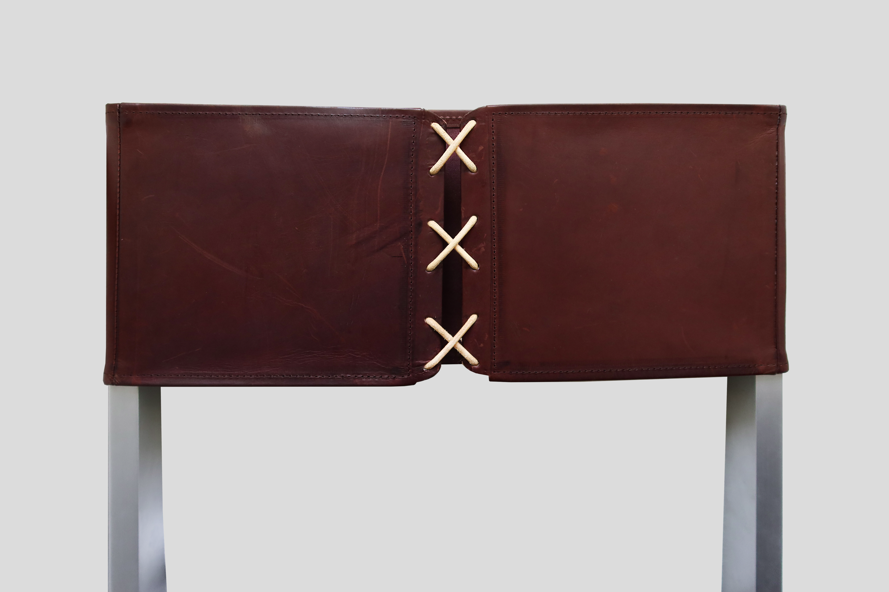
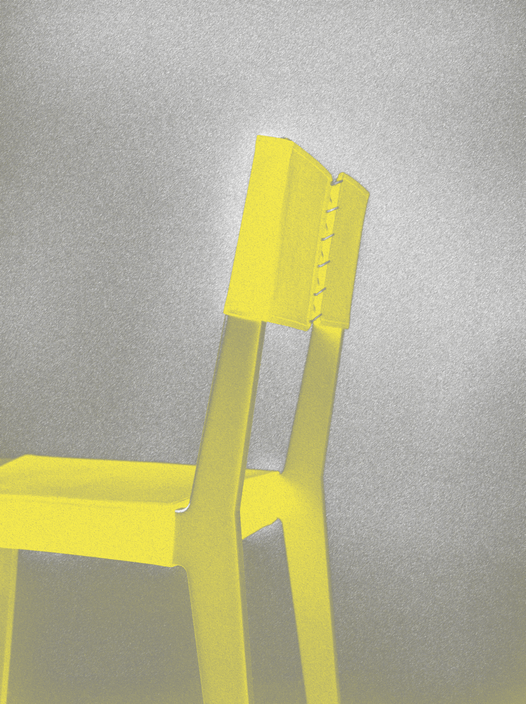
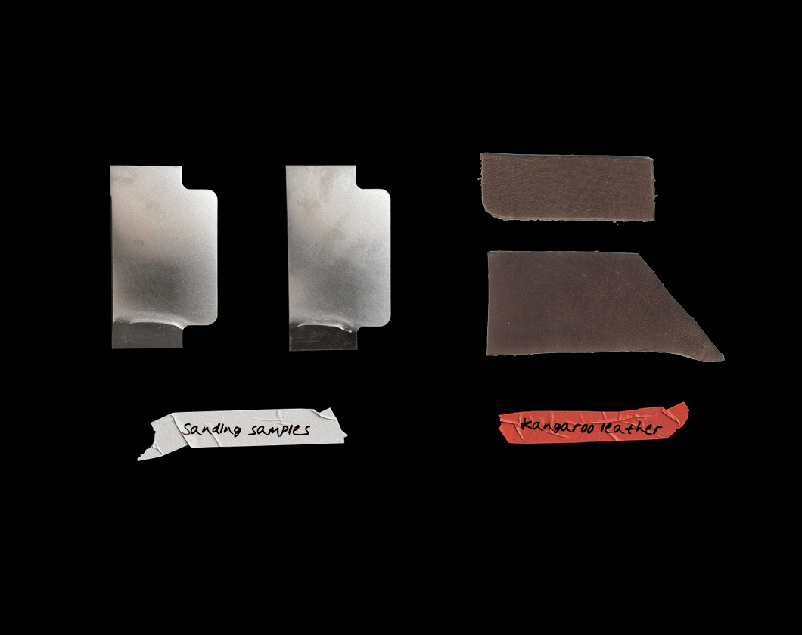

Kaurna Chair
July 2024
Kaurna is my first flat-pack chair designed and built on Kaurna land, in South Australia, made out of solid aluminum and supported by warm-toned kangaroo leather. The deliberate juxtaposition of the metal’s cold rigidity with the organic warmth of the hide interrogates the dialectic between structure and comfort.





